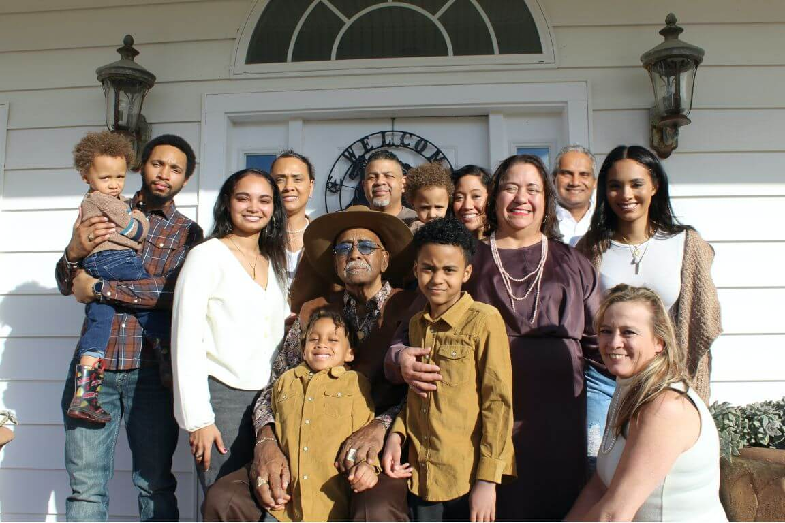

Murid-murid yang diajarkan dan yang mengajarkan harus bersedia mengadakan pembelajaran yang sederhana. Jemaat tidak memerlukan pengajaran akademis dan ilmiah (1Kor. 1:18-31; 2:1-16). Tuhan memerintahkan kita memelihara “domba-domba-Nya” dan bukan “jerapah-jerapah-Nya”. Setiap orang yang mempunyai kelebihan bakat mesti merendahkan diri dengan rendah hati untuk makan sepiring dengan yang kecil-kecil.
Pada waktu itu berkatalah Yesus: Aku bersyukur kepada-Mu, Bapa, Tuhan langit dan bumi, karena semuanya itu Engkau sembunyikan bagi orang bijak dan orang pandai, tetapi Engkau nyatakan kepada orang kecil. Mat. 11:25
Kita harus mengingat kembali teladan jemaat mula-mula di Yerusalem. Ia merupakan model utama dan senantiasa. Saudara-saudara pada waktu itu sangat sederhana dan kebanyakan mereka tidak tahu membaca dan menulis. Mereka tidak ada penerbit ataupun kertas. Demikian pula mereka tidak mempunyai Alkitab. Namun, Jemaat mula-mula itu suci dan luhur, sehingga sampai sekarang menjadi sumber acuan bagi kita.
Ketika kita memandang pola hidup mereka, dapat disadari bahwa para Rasul telah menggunakan metode pengulangan sebagai pola mengajar (katekese). Dengan demikian setiap murid dapat menyerap dan menyimpan firman dalam pikiran dan hatinya. Mereka tidak pergi mencari-cari ajaran baru ataupun menciptakan hal-hal lain. Tetapi segala sesuatu yang penting untuk Jemaat para Rasul mengulang-ulang dalam jangka waktu yang lama sampai setiap orang telah menguasai dasar-dasar iman dengan baik (Fil. 3:1; 2Pet. 1:12-15).
Para Rasul mengenali kebutuhan menyampaikan segala maksud Allah kepada Jemaat dan bukan sekadar kumpulan pelajaran Alkitab atau teologi. Setiap Murid telah diajar hingga menjadi serupa dengan Yesus Kristus (20:26-27; Fil. 4:9; 2Tim. 2:2). Pengajaran para Rasul secara sederhana mengacu kepada tiga hal berikut ini:
- Menyatakan Kristus: kepribadian-Nya, kuasa-Nya, dan janji-janji-Nya;
- Segala perintah yang Tuhan Yesus telah memerintahkan untuk kita hidupi;
- Segala prinsip untuk pembangunan Jemaat.
Kita harus menjadi sederhana seperti Jemaat mula-mula supaya setiap maksud Allah dapat diterima dan diserap oleh setiap saudara seiman, terutama oleh yang kurang berpendidikan.
Tuhan Allah tidak akan menilai kita hanya berdasarkan seberapa banyak kita mengetahui mengenai Alkitab. Dia akan menuntut daripada kita juga bagaimana pola hidup kita. Doktrin dan ajaran Alkitabiah harus di tuju untuk membangun pola hidup murid-murid Yesus, yaitu Jemaat (Tit. 2:1-15).
Kembali